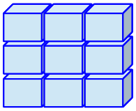
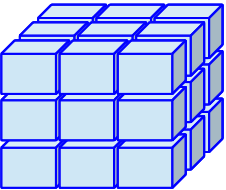
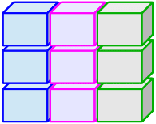
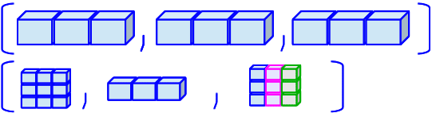

5
Here is the generic way we assign something like a value to an object_name:
= or <-
<- is preferable for certain occasions= because less typing hehe
| Class | What is it? | Examples | |
|---|---|---|---|
| Doubles | dbl |
Numbers | -5.3, 14.5, or 2000.0001 |
| Integers | int |
Whole numbers (no decimals), more specific than doubles | -5, 14, or 2000 |
| Characters | chr |
These are text or words that are in quotations. Math cannot be done on these. | “My example character” |
| Factor | fct |
Categorical variables stored with levels/groups (good pkg: forcats) |
"blue", "red", "purple" |
| Logical | lgl |
Values that take TRUE or FALSE | TRUE or FALSE |
| Date | date |
Character that represents a date (good pkg: lubridate) |
"12-13-2005" |
| Class | Dimension | What does it contain? | |
|---|---|---|---|
| Vector | 1D | all the same type* of pieces of data | |
| Matrix |  |
2D | all the same type* of pieces of data |
| Array |  |
ND | all the same type* of pieces of data |
| Data frame / table |  |
2D | different types of pieces of data |
| List |  |
1D | other types of collections of data |
*If you put different types of data in a vector, matrix, or array, they will be coerced into characters
class() function tells us the class of the object (in this case, hrs_data is a data frame)
[1] "data.frame"tibble() function to print it as a tibble
# A tibble: 2,728 × 32
hhid pn id birthyr birthmo birthdate proxy coupled sex age_mo age_yr
<fct> <fct> <chr> <dbl> <dbl> <dbl> <fct> <fct> <fct> <dbl> <dbl>
1 5527… 010 5527… 1967 9 2814 Resp… Not a … Fema… 665 55
2 5553… 020 5553… 1966 7 2387 Resp… Couple… Fema… 676 56
3 5597… 010 5597… 1967 3 2602 Resp… Couple… Male 663 55
4 5581… 020 5581… 1973 10 5036 Resp… Couple… Male 600 50
5 5547… 020 5547… 1950 7 -3153 Resp… Couple… Male 860 71
6 5510… 010 5510… 1970 1 3667 Resp… Not a … Fema… 632 52
7 5505… 010 5505… 1960 1 14 Resp… Not a … Male 749 62
8 5590… 010 5590… 1971 4 4122 Resp… Couple… Male 621 51
9 5562… 020 5562… 1952 9 -2664 Resp… Couple… Male 845 70
10 5507… 010 5507… 1966 1 2206 Resp… Couple… Male 679 56
# ℹ 2,718 more rows
# ℹ 21 more variables: ed <dbl>, degree <fct>, race_original <fct>,
# smoke_ever <fct>, smoke_now <fct>, drink <fct>, height <dbl>, srh <fct>,
# act_vig <fct>, bp <fct>, diab <fct>, cancer <fct>, lung <fct>, hrt <fct>,
# strk <fct>, psych <fct>, sleep <fct>, arth <fct>, cond_count <dbl>,
# cesd <dbl>, income <dbl>
# A tibble: 2,728 × 32
hhid pn id birthyr birthmo birthdate proxy coupled sex age_mo age_yr
<fct> <fct> <chr> <dbl> <dbl> <dbl> <fct> <fct> <fct> <dbl> <dbl>
1 5527… 010 5527… 1967 9 2814 Resp… Not a … Fema… 665 55
2 5553… 020 5553… 1966 7 2387 Resp… Couple… Fema… 676 56
3 5597… 010 5597… 1967 3 2602 Resp… Couple… Male 663 55
4 5581… 020 5581… 1973 10 5036 Resp… Couple… Male 600 50
5 5547… 020 5547… 1950 7 -3153 Resp… Couple… Male 860 71
6 5510… 010 5510… 1970 1 3667 Resp… Not a … Fema… 632 52
7 5505… 010 5505… 1960 1 14 Resp… Not a … Male 749 62
8 5590… 010 5590… 1971 4 4122 Resp… Couple… Male 621 51
9 5562… 020 5562… 1952 9 -2664 Resp… Couple… Male 845 70
10 5507… 010 5507… 1966 1 2206 Resp… Couple… Male 679 56
# ℹ 2,718 more rows
# ℹ 21 more variables: ed <dbl>, degree <fct>, race_original <fct>,
# smoke_ever <fct>, smoke_now <fct>, drink <fct>, height <dbl>, srh <fct>,
# act_vig <fct>, bp <fct>, diab <fct>, cancer <fct>, lung <fct>, hrt <fct>,
# strk <fct>, psych <fct>, sleep <fct>, arth <fct>, cond_count <dbl>,
# cesd <dbl>, income <dbl>$ operator
[1] <NA> High school diploma
[3] <NA> Master's degree
[5] Master's degree Professional degree (Ph.D./M.D./JD)
7 Levels: High school diploma ... Bachelor's degree
dbl)fct)Objects